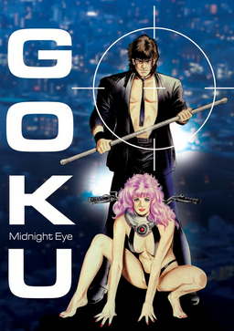

| Goku Midnight Eye | |
|---|---|
| Trailer | Original Poster |
|  | |
|
- Plot : Goku Furinji is a detective who gains a cybernetic eye implant
that can control any computer system on the planet. - Episodes : 2 - Genre : Cyberpunk - Directed by : Yoshiaki Kawajiri - Music by : Kazuhiko Toyama / Yukihide Takekawa - Running time : 1h (x2) - Production : Madhouse animation studio - Release date : 27 January 1989 / 22 December 1989 |
|